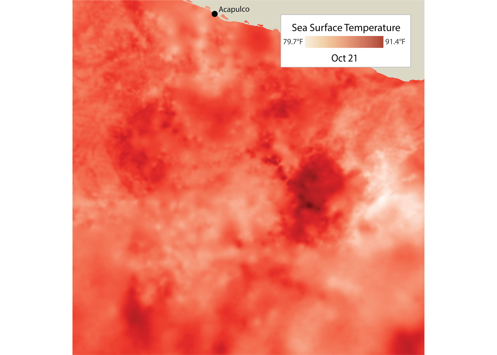

A "Nightmare Scenario" in the Pacific
Hurricane Otis went from relatively mild storm to the strongest hurricane to ever hit southwestern Mexico in under 24 hours

A "Nightmare Scenario" in the Pacific
Hurricane Otis went from relatively mild storm to the strongest hurricane to ever hit southwestern Mexico in under 24 hours
written and created by Michael Sparks
On Saturday, October 14, 2023, meteorologists at the National Hurricane Center in Miami put out an innocuous seven-day outlook: several hundred miles south of Mexico, a low-pressure system, which plays a crucial role in storm development, was beginning to form in the Pacific Ocean. A tropical depression, the outlook said, “is expected to form during the latter part of next week while the system meanders well offshore of the coast of Mexico.”
That tropical depression did form. But what was expected to meander well offshore eventually rammed directly into Acapulco as the strongest storm to ever hit Mexico’s western coast and, ultimately, the most expensive storm to ever hit anywhere in Mexico.

The National Hurricane Center typically puts out public advisories once storms coalesce into tropical depressions. These notices include a five-day forecast within a “cone of uncertainty.”
The NHC put out its first advisory for Tropical Depression Eighteen-E at 10 am Acapulco time on Sunday the 22nd.
Six hours later, the now-upgraded tropical storm was given the name Otis.
1 pm Tuesday the 24th: the NHC published advisory 9A, officially upgrading the storm to Hurricane Otis.
Just twelve hours later, Otis would make landfall as a category 5, with maximum sustained winds above 160 mph.

A recent study by researchers out of Stanford found that, as the climate warms, weather prediction becomes more error-prone. Otis is a case study of the difficulty of forecasting storms in the climate crisis era. It is also a sad tale of the devastation of Acapulco and the long road to recovery ahead.
The storm did not strike without warning. Acapulco, and almost all coastal portions of Mexico’s Guerrero state, were under a hurricane watch by 3 pm on Monday the 23rd. What was completely unexpected was “how quickly and how much Otis would intensify,” said Dr. Jeff Masters, a prominent author on extreme weather and former hurricane scientist with NOAA.
A direct hit on Acapulco is a historical rarity. Although the city sits in a prime tropical cyclone climate–latitude 17 degrees north and near typically warm water–the easterly winds that prevail at this latitude tend to drive storms west, roughly parallel to the coast but far enough not to be a threat to land. Tropical Storm Claudia, which landed in 1973, is the only storm on record as having made landfall within 50 miles of Acapulco. “There are no hurricanes on record even close to this intensity for this part of Mexico,” said the National Hurricane Center in a public release less than six hours before Otis landed.
Accordingly, in the days leading up to landfall, prominent forecast models projected Otis to remain offshore, mirroring typical hurricane behavior for the region. But part of what makes Otis historic is exactly its ahistorical behavior.
Compounding the forecasting challenge was a lack of data particular to southern Mexico and the eastern Pacific.
When the first, and only, Air Force Hurricane Hunter plane flew into Otis to conduct direct observation, the NHC had only classified Otis as a category one storm, relying primarily on satellite imagery to do so. In reality, the Hurricane Hunter team observed that Otis was already a category three: a major hurricane.
The Hurricane Hunter mission reached Otis around 1 pm on Tuesday. At 10 pm that night, the NHC released a notice saying “A nightmare scenario is unfolding for southern Mexico this evening.” Otis, we now know, was in the midst of a process called “extremely rapid intensification,” defined by an increase in wind speed of at least 58 mph within 24 hours. Otis blew past that definition, strengthening by 115 mph in 24 hours. This put it behind only one other eastern Pacific storm for the most rapid intensification on record: 2015’s Hurricane Patricia, which strengthened by 120 mph in a day. Otis would peak at 165 mph and make landfall at 160 mph.
Throughout its life, Otis was persistently stronger than the NHC was able to estimate. Dr. Masters told me that had the storm occurred in the Atlantic, that might not have been the case: “Only one Hurricane Hunter flight made it into Otis. Had Otis been in the Atlantic, at least three flights would have gone in, including one during the time period before RI started. The data from this early flight would have gone into the forecast models, potentially resulting in a much better forecast.” In addition, he said, there were no land-based radars in Mexico that observed Otis; if the storm had been approaching the U.S., data from the dense network of radars would have been available and used to make better model forecasts.
The NHC echoed this in its formal storm report on the hurricane, stating, “The lack of observational data over the eastern Pacific Ocean can make intensity forecasting challenging in extreme RI cases, especially for small tropical cyclones like Otis…The in-situ datasets collected by the Air Force Reserve Hurricane Hunters were crucial for forecasters to recognize that none of the models had an accurate representation of Otis’ intensity…Unfortunately, the RI of Otis was well underway by the time these data were received."
Perhaps paradoxically for such a damaging storm, Otis was relatively quite small. Its hurricane-force winds extended only about 30 miles from its center. But it was this small size that reduced the amount of data points available to forecasters and was one of several obstacles that combined to make forecasting Otis very difficult.
As part of its normal post-storm reports, the National Hurricane Center estimates a “best track” course that the storm likely took. It is clear from comparing that track with the forecasts released during the storm how difficult it was to forecast Otis in real-time. The best track’s color bands also show how Otis meandered north for hundreds of miles before escalating at a nearly unprecedented rate.
Any given weather event is the result of an almost limitless number of variables but, according to experts, two main factors led to the behavior Otis demonstrated.
The first was a strong band of winds known as a “jet streak.” In layman’s terms, a jet streak is an extra fast band of winds flowing through a system that acts to ventilate the hurricane, “similar to when one ventilates a fire,” according to Dr. Masters. That warm air helped to supercharge the storm, much as oxygen does for a fire.
That warm air didn’t act alone. The second critical factor in Otis’ extremely rapid intensification was higher than average sea surface temperatures. The eastern Pacific is already comparatively warm in the mid-latitudes, but October 2023 was exceptional even by those standards. In some areas, the water was more than 3.6° Fahrenheit above average, pushing the overall temperature into the 90s.
“Hurricanes are heat engines that take heat energy from the oceans and convert it to the kinetic energy of wind. Thus, the more heat energy that is available in the ocean, the greater the maximum potential intensity of the hurricane,” Dr. Masters said.
The NHC calculates that nearly 98% of homes and 80% of hotels in Acapulco suffered storm-related damage. UNICEF cataloged 120 hospitals and 33 schools among the damaged buildings. All told, the NHC estimates that Otis caused between $12-16 billion worth of damage, making it the costliest Mexican hurricane ever.
The utter devastation is evident from satellite images of a neighborhood in the heart of the city and a marina in Acapulco Bay.

Despite the extent of its impact, once it made landfall, Otis quickly dissipated. The NHC estimates it was only at hurricane strength for about 12 hours over land. Part of what drove the quick downscaling was the Sierra Madre del Sur mountain range, which abuts the city’s edge. Mountains act as barriers to airflow, disrupting the circulation patterns that sustain a tropical cyclone. Their rugged terrain can also increase friction near the storm’s surface, slowing down winds and further depleting the storm's energy, thus preventing it from moving further inland.
That comes at a cost, though. Hurricanes bring not just strong wind, but also heavy rain. Acapulco saw nearly 11” of it.